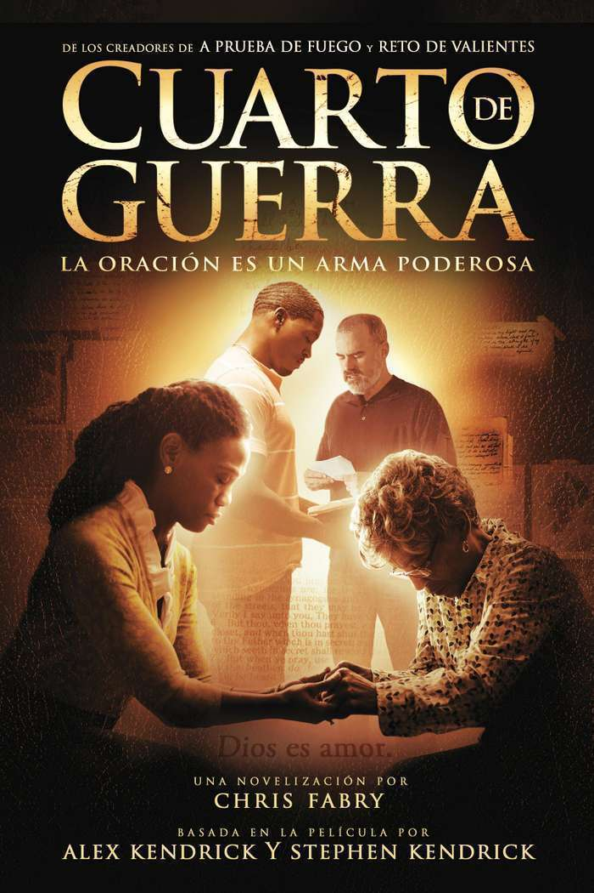

Filmes Recomendados!

O relacionamento de Elizabeth e Tony passa por uma crise. Um dia, Elizabeth conhece uma mulher que lhe ensina o poder da oração e, a partir daí, ela aposta todas as fichas na sua fé e em suas rezas, a fim de salvar seu casamento.
Jovem delinquente do ensino médio é obrigado a ser o tutor de uma escola de baixa renda. Lá, ele se apaixona pela filha do pastor e vive uma paixão cheia de diferenças e surpresas.

Grace é uma professora católica que, ao responder uma pergunta feita por uma de suas alunas, acaba falando sobre Jesus Cristo em plena sala de aula. Um advogado fará de tudo para impedí-la de falar sobre o assunto em um ambiente estudantil.
filmes escolhidos!